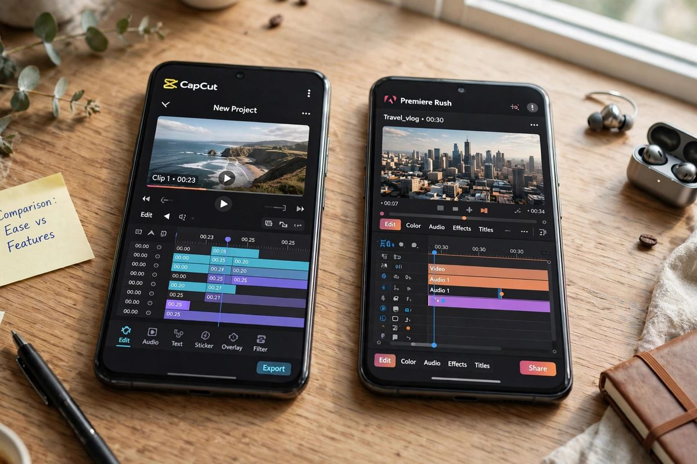

Best Video Quality Settings in CapCut

Blurry exports are almost never the camera's fault — they are a settings problem. These are the resolution, frame rate and bitrate settings that keep CapCut videos sharp.
Resolution: 1080p is the sweet spot
For TikTok, Reels and Shorts, 1080p (1080 × 1920 vertical) is the right choice. It is sharp on every phone, uploads quickly, and matches what the platforms actually show — most viewers never see 4K on a phone screen. Use 4K only when your source footage is 4K and you plan to crop or zoom into it, or when you export for YouTube on a big screen. Exporting a 720p source as 4K does not add detail; it just makes a bigger file with the same soft image. Set your project resolution to match your source clips: if you filmed in 1080p, edit in 1080p.
Frame rate: match your footage
Frame rate is how many frames per second your video shows. Most phone footage is 30fps, and 30fps is the right export setting for talking videos, vlogs and tutorials. Use 60fps for fast action — sports, dance, gaming — because it looks smoother when things move quickly. Use 24fps only for a deliberate cinematic look. The golden rule: export at the same frame rate you filmed at. Mixing 30fps clips into a 60fps project, or the reverse, creates judder — a slight stutter that viewers feel even if they cannot name it.
Bitrate: the setting people ignore
Bitrate is the amount of data per second, and it matters more than resolution for perceived quality. A 1080p video at 8 Mbps looks soft in busy scenes; the same video at 20 Mbps looks crisp. CapCut lets you choose export quality — pick "High" or the highest bitrate option available. Our bitrate calculator on this site shows the file sizes: a one-minute 1080p video at 20 Mbps is about 150 MB, which is fine for modern phones. If your export looks blocky around moving objects or gradients, raise the bitrate before touching anything else.
| Use case | Resolution | Frame rate | Bitrate |
|---|---|---|---|
| TikTok / Reels | 1080 × 1920 | 30 fps | 12–20 Mbps |
| YouTube talking video | 1920 × 1080 | 30 fps | 12–20 Mbps |
| Sports / dance | 1080p | 60 fps | 20–30 Mbps |
| 4K YouTube | 3840 × 2160 | 30 fps | 45 Mbps |
HDR: when to use it, when to skip it
HDR (high dynamic range) captures brighter highlights and deeper shadows, and CapCut supports it on newer phones. It looks stunning on an HDR screen — and washed out on a non-HDR screen, which is still most phones and laptops. Unless your whole audience watches on HDR devices, leave HDR off. The same applies to 10-bit colour: it helps professional colour grading but adds file size and compatibility problems for social video. For TikTok and Reels, standard 8-bit colour is the safe choice.
Quality starts before the edit
No export setting fixes bad source footage. Film with your rear camera instead of the selfie camera — it is sharper on almost every phone. Clean the lens before recording; a smudged lens is the most common cause of soft video. Use good light: a window or a cheap ring light does more for quality than any export setting. And turn off your phone's "save storage" or low-quality recording mode in the camera settings. CapCut can only work with the pixels you give it.
Frequently asked questions
Why does my CapCut export look blurry on TikTok?
Usually low export bitrate, or uploading over a weak connection so TikTok compresses it harder. Export at 1080p, high bitrate, and upload on Wi-Fi.
Is 4K export worth it for TikTok?
Rarely. TikTok re-compresses everything to around 1080p. A high-bitrate 1080p export usually looks better than a low-bitrate 4K one.
Does CapCut reduce quality when I import?
No, CapCut keeps your source quality. Quality is lost at export if the bitrate is too low, or when a platform re-compresses the upload.
Download CapCut — official app
Get the real CapCut free from your official app store. No modified files, no risk.
Try the tools
Aspect Ratio Calculator
Presets for TikTok, Reels, Shorts and YouTube. Enter one side and get the matching resolution instantly.
Bitrate & Export Size Calculator
Work out how big your exported video will be from its length and bitrate — or the bitrate for a target size.
Caption Timing Helper
Paste your script and split it into timed caption lines with start and end timestamps, ready to use.
Template Idea Generator
Pick a niche and a mood and get a complete edit idea: hook, style, transitions and music vibe.
More guides
 What Is CapCut Mod APK?
What Is CapCut Mod APK? CapCut Premium vs Free
CapCut Premium vs Free Is CapCut Mod APK Safe?
Is CapCut Mod APK Safe? How to Install CapCut Officially
How to Install CapCut Officially Best CapCut Templates in 2026
Best CapCut Templates in 2026 Auto Captions in CapCut
Auto Captions in CapCut Keyframe Animation in CapCut
Keyframe Animation in CapCut CapCut Transitions Tutorial
CapCut Transitions Tutorial Best Export Settings in CapCut
Best Export Settings in CapCut CapCut for TikTok
CapCut for TikTok CapCut for Instagram Reels
CapCut for Instagram Reels Text Effects in CapCut
Text Effects in CapCut Background Removal in CapCut
Background Removal in CapCut Speed Ramping in CapCut
Speed Ramping in CapCut Filters and Effects in CapCut
Filters and Effects in CapCut Audio Editing in CapCut
Audio Editing in CapCut
CapCut vs KineMaster CapCut for Beginners
CapCut for Beginners Trending Edits Tutorial
Trending Edits Tutorial